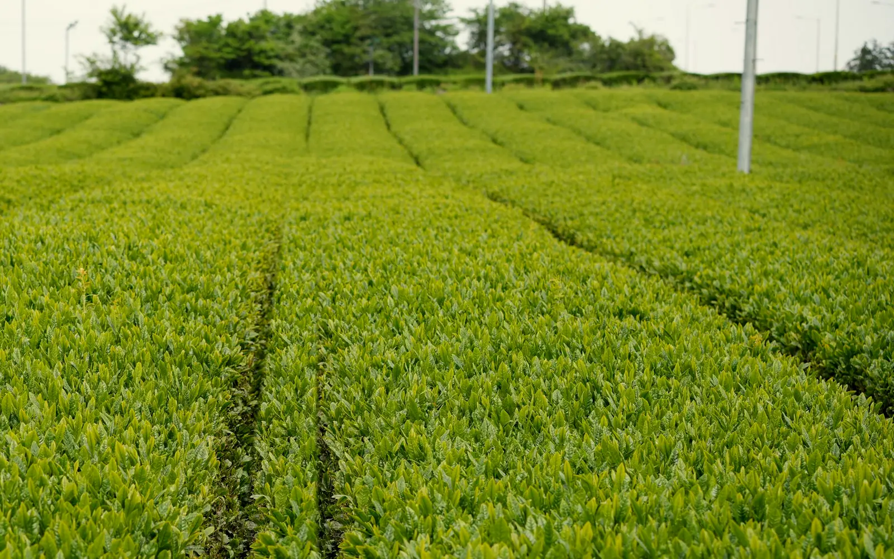
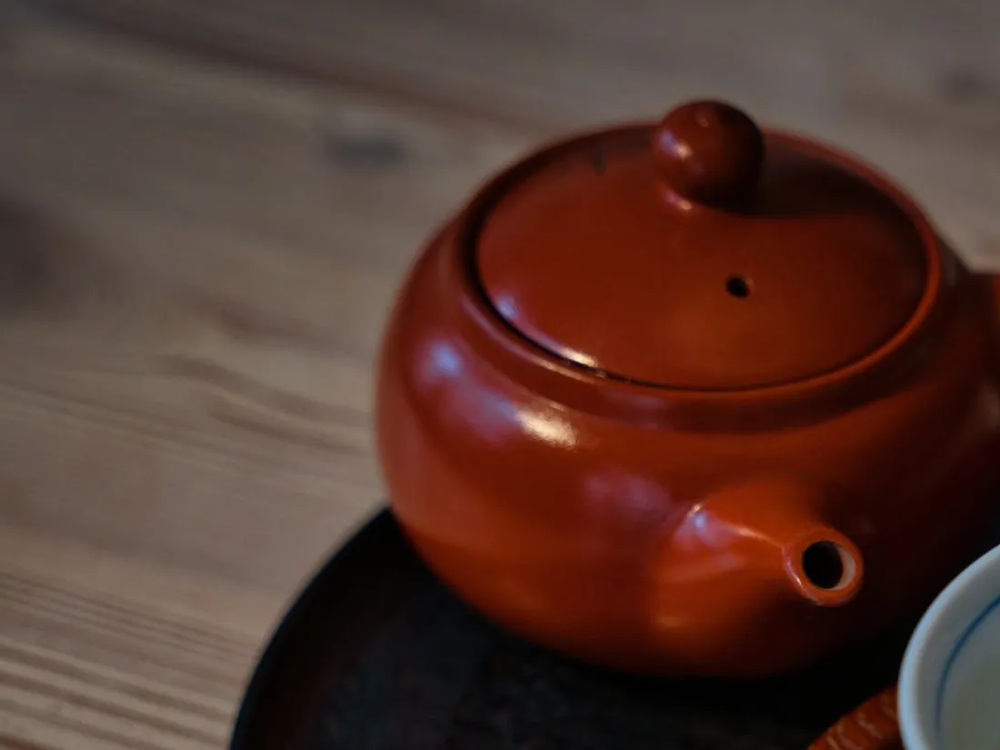
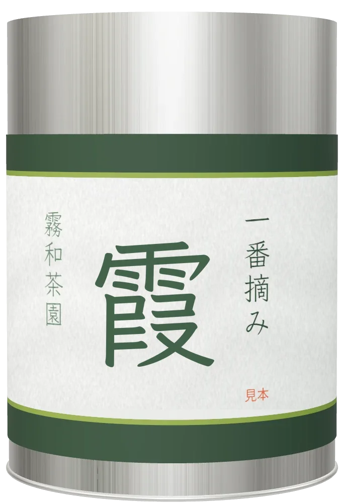

一番摘み「霞」
日当たりのよい牧之原の台地で、朝の霧が晴れ、露が切れてから摘んだ、一番茶の深蒸し煎茶です。
芽のそろうころに
芽の伸びがそろったころ、朝の霧が晴れて葉の露が切れるのを待って、乗用の摘採機を入れます。やわらかい芯と若い葉には、うま味のもとになる成分が多いといわれます。
畝の間には、まわりの草地で刈った草を敷きます。土を守り、茶を育てる、静岡に伝わる茶草場（ちゃぐさば）農法です。
長めに蒸して、揉む
摘んだ葉は、その日のうちに蒸して葉の働きを止め、青くささを抜きます。牧之原の持ち味は、ふつうより長く蒸す深蒸し。渋みがおだやかで、こくのある味になります。長く蒸した葉はやわらかく、揉むうちに細かくなって、粉も少し混じります。
ふつうの煎茶
澄んだ黄緑
深蒸しの「霞」
濃い緑で、少しにごる

二人分の淹れ方
湯を量る
沸かした湯を、二つの湯呑みに注いで量を量ります（二人分で約140ml）。
冷ます
もう一度移しかえて（または湯冷ましで）、70〜80℃ほどにします。
茶葉を入れる
約6g（小さじ山盛り2杯）を網の細かい急須に入れ、湯を注いでふたをします。
待って、注ぐ
約40秒。深蒸しは短めに。少しずつ回し注ぎ、最後の一滴まで出しきります。
とろりとした、濃い緑
一煎目は、少しにごった濃い緑。渋みはおだやかで、甘みとこくが残ります。二煎目は熱めの湯で、待たずにすぐ注いでください。
- 甘み
- 強め
- 渋み
- おだやか
- こく
- しっかり
- 向く人
- 濃いめが好きな方、渋みが苦手な方

霞 80g 茶筒入り
80gで約13回分（1回6g）。開けたら茶筒のふたをしっかり閉め、ひと月ほどで飲みきるのがおすすめです。
お値段は、見本のため表示していません。
この茶について
表示の値と住所は見本です。
一括表示
- 名称
- 煎茶
- 原材料名
- 緑茶（静岡県産）
- 内容量
- 80g
- 賞味期限
- 2027.04.30
- 保存方法
- 高温・多湿を避け、移り香にご注意ください。冷蔵した缶は、室温に戻してから開けてください。
- 製造者
- 霧和茶園
静岡県牧之原市〇〇 1-2-3
品種はやぶきた。4月中旬から5月上旬に摘んだ一番茶を、深く蒸し、火入れは中くらいに仕上げています。
畝の間に草を敷いて育てています。
「露が切れるのを、毎朝畑で待っています。」
三代目の園主が、家族で四町歩の畑を守っています（架空の茶園の文の見本）。
お求めの方法
見本のページのため、実際の販売・受付はしていません。ボタンを押しても、ほかのページは開きません。
茶園の売店で、試飲してから
台地の茶園の小さな売店です。土日は新茶を試飲できます。車は5台まで止められます。
オンラインの店で
茶筒入りのほか、詰め替え用の100g袋もあります。
季節の定期便（年3回）
5月・7月・10月下旬に、一番茶・二番茶・秋の番茶を1袋ずつお届けします。いつでも休めます。
- 新茶のお届け
- 5月上旬から。ご予約は4月から受け付けます。
- 贈り物
- 包み・のしを承ります。
- 送料と日数
- 地域ごとの表で案内します。
- 問い合わせ
- 電話 000-0000-0000（平日9時から17時）、メール info@example.jp（どちらも見本）